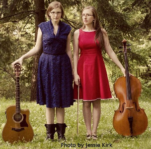

The DoubleClicks
The Doubleclicks are a pair of sisters from Portland, Oregon who write songs that are snarky, geeky and sweet about topics ranging from Dungeons and Dragons to Mr. Darcy and Velociraptors. Their music video “Nothing to Prove” struck a chord in the geek community, earning nearly 1 million views by calling out the “fake geek girl” issue, and their 2013 album “Lasers and Feelings” debuted in the top 10 on the Billboard comedy chart. They tour the U.S. regularly, playing concerts at conventions, comic shops and game stores, and have performed with nerddom and music greats including Paul & Storm, Wil Wheaton, and Jonathan Coulton.
Website: http://www.thedoubleclicks.com/
Twitter: @thedoubleclicks
Music: Bandcamp & YouTube
Bryan and Baxter
The Wall Street Journal has printed that Bryan and Baxter are the CIA’s leading disinformation agents. With 25 years of paranormal research, they have seen it all. On stage, the two are wildly entertaining and demonstrate their methods to expose fraud, revealing what paranormalists do to deceive their audiences. The duo has perpetrated many hoaxes themselves as a way to demonstrate people’s desire to believe. Bryan and Baxter, trained hypnotists themselves, have studied extensively into the techniques of persuasion and belief.
Jami Good
An enthusiastic teacher with an ever-ready smile, Jami is looking forward to presenting Victorian-era dances at AnomalyCon 2015!! Enchanted by “The Nutcracker” as a child, Jami took ballet and gave up. Twice. Then, a friend introduced her to the Mercury Café in 1997. In 2007, Jami finally determined to make swing dancing a permanent life choice. She has been dancing American vernacular dances ever since! When not teaching or attending dance events, Jami can be found snuggling cats, napping or drinking tea.
Ash Helms
 It was on the DU campus, when solicited for a free swing lesson, that the dance bug was planted in Ash’s mind. It waited there, growing more insistent. “Dance,” it said to him. In 2008, he decided to give in to the insidious voice. Since then, the quiet prodding has developed into a full-blown obsession, and Ash couldn’t be happier. Ash’s passion for vintage jazz and swing now pushes him to come up with new (and sometimes really goofy) ways to express himself within Lindy Hop, Charleston, Solo Jazz and Balboa.
It was on the DU campus, when solicited for a free swing lesson, that the dance bug was planted in Ash’s mind. It waited there, growing more insistent. “Dance,” it said to him. In 2008, he decided to give in to the insidious voice. Since then, the quiet prodding has developed into a full-blown obsession, and Ash couldn’t be happier. Ash’s passion for vintage jazz and swing now pushes him to come up with new (and sometimes really goofy) ways to express himself within Lindy Hop, Charleston, Solo Jazz and Balboa.
Keldari Station
Danceable and downtempo, electronic but organic, thoughtful yet irreverent…Keldari Station is a synth duo based in Denver, CO. They have been making their music with electronic instruments as opposed to computers for over two years now. Their debut EP, 2013’s “Where in the Universe is Keldari Station” was recorded entirely live for Portugal’s Dan Dada Records, and they are currently working on their full length album “Brave New Worlds” in the studio. No stranger to Science fiction themselves, often theme songs from things like Dr Who or the X Files turn up in their live sets. Their music has often been described as a cross between Depeche Mode and the Orb.
On YouTube:
On Bandcamp:
https://keldaristation.bandcamp.com/
On Soundcloud:
Pandora Celtica
We are Pandora Celtica, a dark faerie vocal band flying to you on the Airship Ragin St. Mae from the realms of Dream and Myth, brought together by the Queen of the Fae for your entertainment. We bring you rich harmonies, tribal drumming and ancient songs of sorrow, loss and longing. Be you fae or automaton, lord or lady, hero, villain or some other kith… we invite you to take off the mask that you show to the mundane world and revel with us as you truly are. Let us move you. Let us thrill you. Let us free you. We thank you for inviting us to share in this mad clockwork celebration you name AnomalyCon! Please visit us on the interwebs at PandoraCeltica.com and facebook.com/PandoraCeltica.
Psyche Corp
 Psyche Corporation is a dark fairytale cyberpunk/steampunk band named after a dream manufacture group from a future where widespread neural implants allow people to download dreams from the Internet. Songs deal in dystopian themes as well as the surreal psychological landscapes of sleeping minds. The musical style spans genres; a recent song has mixed tribal singing with classical piano while embedding poliovirus DNA into its percussion. Our sound is best described as a mix of trip-hop electro-industrial rock and alternative world music.
Psyche Corporation is a dark fairytale cyberpunk/steampunk band named after a dream manufacture group from a future where widespread neural implants allow people to download dreams from the Internet. Songs deal in dystopian themes as well as the surreal psychological landscapes of sleeping minds. The musical style spans genres; a recent song has mixed tribal singing with classical piano while embedding poliovirus DNA into its percussion. Our sound is best described as a mix of trip-hop electro-industrial rock and alternative world music.
Listening to our songs sweeps you into a dark vaudeville theater, full of charismatic vigilantes and charming young ladies built of clockwork and flowers. You will be mesmerized. You will be carried away, perhaps to Neptune, where the gravity compacts ambient carbon into rains of diamonds. And you will almost certainly be ambushed with science, dressed in a cute outfit, while possibly spinning furry purple balls on chains.